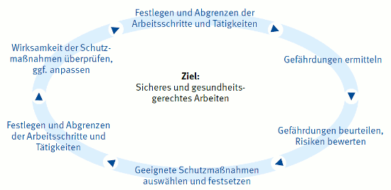

Der Unternehmer hat in Abhängigkeit von den ausgewählten Arbeitsverfahren die vom Bauherrn planerisch und organisatorisch vorgesehenen Vorgaben und Maߟnahmen zu berücksichtigen.
Vorgesehene Maßnahmen und Vorgaben können z. B. sein:
Der Unternehmer hat dem Bauherren die für die sichere Durchführung der Arbeiten erforderlichen Voraussetzungen mitzuteilen.
Voraussetzungen können z. B. sein:
Siehe Regeln:
Siehe Informationen:
Siehe Normen:
Der Unternehmer hat vor und während der Ausführung der Dach- und Holzbauarbeiten die Hinweise des Koordinators nach der Baustellenverordnung und des Sicherheits- und Gesundheitsschutzplanes zu berücksichtigen.
Siehe § 5 der Baustellenverordnung in Verbindung mit den Regeln zum Arbeitsschutz auf Baustellen
Hat der Unternehmer Bedenken gegen die vorgesehene Art der Ausführung, insbesondere hinsichtlich der Sicherung gegen Unfallgefahren, so hat er diese dem Auftraggeber unverzüglich möglichst schon vor Beginn der Arbeiten schriftlich mitzuteilen.
Übernimmt der Unternehmer einen Auftrag, dessen Durchführung zeitlich und örtlich mit Aufträgen anderer Unternehmer zusammenfällt, ist er verpflichtet, sich mit den anderen Unternehmern abzustimmen, soweit dies zur Vermeidung gegenseitiger Gefährdungen erforderlich ist. Gegebenenfalls hat der Bauherr einen Sicherheits- und Gesundheitsschutzkoordinator zu bestellen.
Siehe
Der Unternehmer hat unter Berücksichtigung der betrieblichen Verhältnisse die für die Erste Hilfe und für die Rettung die erforderlichen Einrichtungen, Sachmittel und das Personal zur Verfügung zu stellen.
Der Unternehmer hat entsprechend der Gefährdungsbeurteilung den Beschäftigten geeignete persönliche Schutzausrüstung zur Verfügung zu stellen.
Die Beschäftigten haben diese bestimmungsgemäß zu verwenden und festgestellte Mängel mitzuteilen.
Der Unternehmer hat durch eine Gefährdungsbeurteilung zu ermitteln, welche Maßnahmen des Arbeitsschutzes für die Beschäftigten erforderlich sind. Er hat die Beurteilung je nach Art der Tätigkeiten vorzunehmen. Bei gleichartigen Arbeitsbedingungen ist die Beurteilung eines Arbeitsplatzes oder einer Tätigkeit ausreichend.
Im Ergebnis der Gefährdungsbeurteilung sind Maßnahmen zur Beseitigung der ermittelten Gefährdungen festzulegen, durchzuführen und deren Wirksamkeit zu überprüfen.
Eine Gefährdung kann sich insbesondere ergeben durch
Bei der Erstellung der Gefährdungsbeurteilung sind folgende allgemeine Grundsätze zu berücksichtigen:
Informationen zur Gefährdungsbeurteilung stellen die Unfallversicherungsträger z. B. im Internet zur Verfügung.

Abb. 1 Systematik der Gefährdungsbeurteilung
Dach- und Holzbauarbeiten müssen von fachlich geeigneten Vorgesetzten geleitet werden. Diese müssen die vorschriftsmäßige Durchführung der Arbeiten gewährleisten.
Siehe § 4 Abs. 1 der DGUV Vorschrift 38/39 "Bauarbeiten"
Fachliche Eignung und Erfahrung haben Personen, die aufgrund ihrer Ausbildung und bisherigen Tätigkeiten umfassende Kenntnisse auf dem Gebiet der jeweils durchzuführenden Arbeiten haben und mit einschlägigen staatlichen Arbeitsschutzvorschriften, Unfallverhütungsvorschriften und allgemein anerkannten Regeln der Technik vertraut sind.
Die schriftliche Beauftragung kann mit dem entsprechenden Muster-Formular aus Abschnitt 2 der DGUV Regel 100-001 "Grundsätze der Prävention" durchgeführt werden.
Siehe
Dach- und Holzbauarbeiten müssen von Aufsichtführenden beaufsichtigt werden.
Siehe § 4 Abs. 2 der DGUV Vorschrift 38/39 "Bauarbeiten"
Aufsichtführender ist, wer die Durchführung von Dach- und Holzbauarbeiten zu überwachen und für die arbeitssichere Ausführung zu sorgen hat. Er muss hierfür ausreichende Kenntnisse und Erfahrungen besitzen sowie weisungsbefugt sein.
Zur Beaufsichtigung von Dach- und Holzbauarbeiten gehört z. B. auch das Überprüfen auf augenscheinliche Mängel an Gerüsten, Geräten oder anderen Einrichtungen, Schutzvorrichtungen usw., die von anderen errichtet bzw. zur Verfügung gestellt und für eigene Arbeiten genutzt werden.
Der Unternehmer informiert und unterweist seine Beschäftigten und ggf. seine im Rahmen der im Arbeitnehmerüberlassungsgesetz (AÜG) erlaubten Zeitarbeit eingesetzten Mitarbeiter über die Gefährdungen bei den Dach- und Holzbauarbeiten.
Die Unterweisung umfasst Anweisungen und Erläuterungen, die eigens auf den Arbeitsplatz oder den Aufgabenbereich der Beschäftigten ausgerichtet sind. Die Unterweisung muss bei der Einstellung, bei Veränderungen im Aufgabenbereich, der Einführung neuer Arbeitsmittel oder einer neuen Technologie vor Aufnahme der Tätigkeit der Beschäftigten erfolgen. Die Unterweisung muss an die Gefährdungsentwicklung angepasst sein und erforderlichenfalls regelmäßig, mindestens jedoch einmal jährlich wiederholt werden.
Die Unterweisung ist zu dokumentieren.
Bei der Benutzung von technischen Arbeitsmitteln, wie z. B. Maschinen und Geräten, sind den Beschäftigten soweit erforderlich Betriebsanweisungen zur Verfügung zu stellen.
Ist für die auszuführenden Arbeiten eine Montageanweisung nach Abschnitt 2.6 erforderlich, so hat der Unternehmer die Beschäftigten vor Aufnahme der Arbeiten auf die Besonderheiten des Arbeitseinsatzes zu unterweisen.
Siehe
Mangelhafte Arbeitsmittel oder Einrichtungen sind nicht weiter zu benutzen, mangelhafte Arbeitsverfahren oder Arbeitsabläufe sind bis zur Beseitigung des Mangels abzubrechen.
Mängel an Arbeitsmitteln, Einrichtungen, Arbeitsverfahren oder Arbeitsabläufen durch die für den Beschäftigten Gefahren entstehen können, müssen dem Aufsichtführenden unverzüglich gemeldet werden.
Der Aufsichtführende informiert den Unternehmer bzw. den Vorgesetzten nach Abschnitt 2.3.1 und handelt weiter nach dessen Anweisung.
Vor Beginn der Arbeiten hat der Unternehmer zu ermitteln, ob
Hinweis
Dies kann auch durch eine zuverlässige, fachkundige Person gem. § 13 Unfallverhütungsvorschrift
"Grundsätze der Prävention" (Pflichtenübertragung) erfolgen.
Siehe § 16 Abs. 1 der DGUV Vorschrift 38/39 "Bauarbeiten"
Gefahren können ausgehen z. B. von:
Sind Gefährdungen an bzw. durch Anlagen nach Abschnitt 2.5.1 vorhanden, sind die erforderlichen Schutzmaßnahmen im Einvernehmen mit deren Eigentümern, Betreibern und erforderlichenfalls den zuständigen Behörden festzulegen.
Siehe § 16 Abs. 2 der DGUV Vorschrift 38/39 "Bauarbeiten"
Bei unvermutetem Antreffen von Anlagen nach Abschnitt 2.5.1 sind die Arbeiten sofort zu unterbrechen. Der Aufsichtführende nach Abschnitt 2.3.2 ist zu verständigen.
Siehe § 16 Abs. 3 der DGUV Vorschrift 38/39 "Bauarbeiten"
Sind bei Dach- oder Holzbauarbeiten Montagearbeiten auszuführen, bei denen besondere sicherheitstechnischen Angaben erforderlich sind, hat der Unternehmer eine schriftliche Montageanweisung zu erstellen, die alle erforderlichen sicherheitstechnischen Angaben, einschließlich der vom Planer und vom Koordinator nach Baustellenverordnung getroffenen Festlegungen, enthält.
Die Montageanweisung muss an der Montagestelle vorliegen.
Besondere sicherheitstechnische Angaben bei Holzbauarbeiten können z. B. erforderlich sein, bei der Montage von
Erforderlicher Bestandteil der Montageanweisung sind Angaben z. B. über
Angaben der Montageanweisung können auch in Verlege- und Ausführungsplänen enthalten sein.
Siehe § 17 der DGUV Vorschrift 38/39 "Bauarbeiten"
Sind bei Dach- oder Holzbauarbeiten Verlegearbeiten auszuführen, bei denen besondere sicherheitstechnischen Angaben erforderlich sind, hat der Unternehmer eine schriftliche Verlegeanweisung auf der Baustelle zur Verfügung zu stellen. Dies kann auch die Verlegeanleitung des Herstellers sein. Die sicherheitstechnischen Angaben des Herstellers sind zu berücksichtigen.
Besondere sicherheitstechnische Angaben bei Dacharbeiten können z. B. erforderlich sein, beim Verlegen von
Erforderlicher Bestandteil der Verlegeanleitung sind Angaben z. B. über
Dach- und Holzbauarbeiten dürfen an Decken, Dächern und Wänden nicht gleichzeitig mit anderen Bauarbeiten ausgeführt werden, sofern die darunter liegenden Arbeitsplätze und Verkehrswege nicht gegen herabfallende, umstürzende, abgleitende oder abrollende Gegenstände und Massen geschützt sind.
Bereiche, in denen Personen durch herabfallende, umstürzende, abgleitende oder abrollende Gegenstände gefährdet werden können, dürfen nicht betreten werden. Der Unternehmer bzw. der Vorgesetzte nach Abschnitt 2.3.1 muss diese Bereiche festlegen. Sie sind zu kennzeichnen und abzusperren oder durch Warnposten zu sichern.
Schutz gegen herabfallende, umstürzende, abgleitende oder abrollende Gegenstände und Massen ist gegeben, wenn über den darunter liegenden Arbeitsplätzen und Verkehrswegen Abdeckungen, Gerüstbeläge, Fangwände, Fanggitter, Fangnetze mit einer Maschenweite von höchstens 2 cm, Auffangnetze mit Planen oder Schutzdächer vorhanden sind.
Absperrungen können z. B. durch Geländer, Ketten und Seile erstellt werden, Trassierbänder sind dazu nicht geeignet.
Vor Beginn der Feuerarbeiten ist die Brandgefährdung des Daches im Rahmen der Gefährdungsbeurteilung zu ermitteln. Bei Feuerarbeiten im Dachbereich müssen besondere Brandschutzmaßnahmen ergriffen werden.
Zu Feuerarbeiten zählen beispielsweise Flachdachabdichtungen mit Heißbitumen im Gießverfahren und Verschweißen von Bitumenbahnen.
Die eingesetzten entzündlichen Gefahrstoffe wie Propangasflaschen und heißes Bitumen sind mengenmäßig auf den Schichtbedarf zu begrenzen. Brennbare Materialien und Gasflaschen dürfen nicht im feuergefährdeten Bereich gelagert werden. Können brennbare Materialien nicht entfernt werden, sind sie abzudecken.
Wirksame Zündquellen müssen entfernt werden. Bitumenkocher in nichtbrennbaren Wannen standsicher auf dem Dach aufstellen. Auf ausreichenden Abstand zu brennbaren Materialien ist zu achten. Bitumenkocher sollten mit Temperaturregler, Überfüllsicherungen und Deckeln ausgestattet sein. Bitumenkocher nicht unbeaufsichtigt lassen, Bitumen kann sich bei Überhitzung selbstentzünden.
Flämmgeräte nicht unbeaufsichtigt lassen. Standsicher aufstellen. Gegebenenfalls geeignete nichtbrennbare Ablegevorrichtungen verwenden. Beim Verschweißen der Bitumenbahnen können brennbare Materialien wie Bitumenbahnen, hölzerne Dachkonstruktionen und Dämmstoffe entzündet werden. Gegebenenfalls Brandwachen während und nach den Feuerarbeiten aufstellen.
Werden bei Dacharbeiten Heiz-, Schmelz- oder Flämmgeräte sowie Lötgeräte eingesetzt, sind an der jeweiligen Arbeitsstelle pro eingesetztem Arbeitsmittel mindestens ein Feuerlöscher für die entsprechenden Brandklassen mit mindestens 6 Löscheinheiten (LE) bereit zu halten. Ein 6 kg Pulverlöscher mit ABC-Löschpulver entspricht in der Regel 10 LE. Die Feuerlöscher müssen jederzeit schnell und leicht erreichbar sein.
Siehe
Feuerlöscher sind mindestens alle 2 Jahre und nach jedem Einsatz durch einen Sachkundigen auf Funktionsfähigkeit zu prüfen. Es ist ein schriftlicher Nachweis zu führen.
Siehe ASR A2.2 – Maßnahmen gegen Brände
Eine ausreichende Anzahl der Beschäftigten muss in der Handhabung von Feuerlöschern unterwiesen und geübt sein.
Siehe
Tabelle 1
Brandklassen nach DIN EN 2: 2005.01 –
Brandklassen (ASR A 2.2)
| Piktogramm | Brandklasse |
|---|---|
|
Brandklasse A: Beispiele: Holz, Papier, Stroh, Textilien, Kohle, Autoreifen |
|
|
Brandklasse B: Beispiele: Benzin, Benzol, Öle, Fette, Lacke, Teer, Stearin, Paraffin |
|
|
Brandklasse C: Beispiele: Methan, Propan, Wasserstoff, Acetylen, Erdgas, Stadtgas |
|
|
Brandklasse D: Beispiele: Aluminium, Magnesium, Lithium, Natrium, Kalium und deren Legierungen |
|
|
Brandklasse F: |
Tabelle 1.1
Zuordnung des Löschvermögens zu Löschmitteleinheiten (ASR A 2.2)
| LE | Löschvermögen | |
| Brandklasse A | Brandklasse B | |
| 1 | 5 A | 21 B |
| 2 | 8 A | 34 B |
| 3 | 55 B | |
| 4 | 13 A | 70 B |
| 5 | 89 B | |
| 6 | 21 A | 113 B |
| 9 | 27 A | 144 B |
| 10 | 34 A | |
| 12 | 43 A | 183 B |
| 15 | 55 A | 233 B |